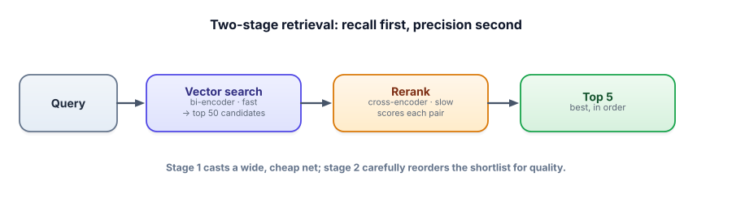

Retrieval & reranking
Vector search is fast but a little blunt — it ranks by similarity, which isn’t the same as relevance. Reranking adds a second, smarter pass that reads each candidate against the query and reorders for quality. This two-stage pattern is one of the biggest, cheapest wins in RAG.
Why “similar” isn’t “best”
Your embedding model encodes the query and each chunk independently, then compares the vectors. That’s what makes it fast — you can pre-embed everything — but it also means the model never looks at the query and a chunk together, so it can miss fine-grained relevance. A chunk can be broadly on-topic (high similarity) yet not actually answer the question. The fix is a reranker: a model that takes the query and one candidate chunk as a pair and scores how well that chunk answers that query.
A bi-encoder embeds query and document separately, so similarity is a fast vector comparison (this is your retriever). A cross-encoder feeds the query and a document together through a model to produce a single relevance score — far more accurate, but far slower (you must run it per candidate). The standard design is two-stage retrieval: use the fast bi-encoder to fetch many candidates (high recall), then the slow cross-encoder to rerank them down to the best few (high precision).

See the funnel and the reorder
Type a question. Stage 1 returns a shortlist by a fast text score; “Rerank” re-scores those candidates more carefully and reorders them. Watch ranks shift — that reordering is the whole value.
Retrieve → rerank
Both stages use simple text scores so this runs in your browser; real systems use embeddings (stage 1) and a trained cross-encoder (stage 2). Same funnel, same reorder.
Retrieve broadly with embeddings, then rerank with a free cross-encoder for precision.
!pip install sentence-transformers
from sentence_transformers import SentenceTransformer, CrossEncoder
import numpy as np
bi = SentenceTransformer("all-MiniLM-L6-v2") # stage 1: retriever
ce = CrossEncoder("cross-encoder/ms-marco-MiniLM-L-6-v2") # stage 2: reranker (free)
chunks = [...] # your corpus
index = bi.encode(chunks, normalize_embeddings=True)
def search(query, fetch=50, keep=5):
# stage 1: fast, wide net
q = bi.encode([query], normalize_embeddings=True)[0]
cand_idx = np.argsort(index @ q)[::-1][:fetch]
cands = [chunks[i] for i in cand_idx]
# stage 2: careful rerank of the shortlist only
scores = ce.predict([(query, c) for c in cands]) # reads query+chunk together
reranked = [c for _, c in sorted(zip(scores, cands), reverse=True)]
return reranked[:keep]You only run the expensive cross-encoder on the 50 candidates, not the whole corpus — that’s what makes two-stage affordable. Reranking often improves answer quality more than swapping to a bigger LLM, for a fraction of the cost.
- Bi-encoders are fast but blunt (independent embeddings); cross-encoders are accurate but slow (read the pair together).
- Two-stage retrieval: bi-encoder fetches many (recall), cross-encoder reranks to a few (precision).
- You only rerank the shortlist (e.g., 50 → 5), which keeps the expensive step affordable.
- Reranking is often a bigger quality win than a bigger LLM, and cheaper.
- Tune two numbers: how many to fetch (stage-1 recall) and how many to keep (stage-2 precision into the prompt).
Your RAG retrieves the right chunk into the top 20, but it’s ranked #14 and your prompt only includes the top 3 — so the model never sees it. Cheapest effective fix?
1. Why can’t you just run the cross-encoder over your entire corpus and skip the bi-encoder?
2. Your reranker is great but adds 300 ms per query and you have a tight latency budget. Name two levers to manage the cost.
3. Retrieval recall@20 is 0.99 but answer quality is mediocre. Is reranking likely to help? What about if recall@20 were 0.6?
▸ Show solutions & reasoning
1. Because the cross-encoder must run the model on every (query, document) pair — for a million chunks that’s a million forward passes per query, hopelessly slow. The bi-encoder pre-computes document vectors once and reduces a query to a few fast comparisons, narrowing to a shortlist the cross-encoder can afford to score. The two stages exist precisely to make precision affordable.
2. (a) Rerank fewer candidates — score the top 20 instead of 100; less work, slightly lower ceiling. (b) Use a smaller/faster reranker model, trading a little accuracy for speed. (Bonus: cache rerank results for repeated queries.) Tune against your latency budget and a quality target.
3. At recall@20 = 0.99, the right chunk is almost always in the candidate set — it’s just ordered poorly, so reranking (which reorders) is exactly the cure. At recall@20 = 0.6, the right chunk is often not retrieved at all, so reranking can’t help — you can’t reorder what isn’t there. Then the fix is upstream: better chunking, a better embedding model, hybrid search, or fetching more candidates. Reranking improves ordering, never recall.
Two refinements make reranking even better. First, diversity: top results are often near-duplicates (three chunks saying the same thing), wasting prompt space. Maximal Marginal Relevance (MMR) re-ranks to balance relevance with novelty, so your top-k covers more distinct information — valuable when a question needs facts from several places. Second, fetch wide, keep narrow: the most common tuning is increasing how many candidates stage 1 returns (raising the chance the right chunk is somewhere in the shortlist) while keeping the number you actually put in the prompt small (so the model isn’t diluted). Recall is stage 1’s job; precision is stage 2’s.
The strategic insight: in most RAG systems, retrieval is the bottleneck, not generation. Teams reflexively reach for a bigger, pricier LLM when their real problem is that the right evidence isn’t making it into the prompt. Adding a reranker, fetching more candidates, and (next lesson) blending in keyword search usually buys more answer quality per dollar than any model upgrade. Fix what reaches the model before you upgrade the model.
Semantic search has a blind spot: exact terms, codes, and rare words that embeddings smear together. Keyword search nails those. Combine them and you get the best of both. Next: hybrid search.